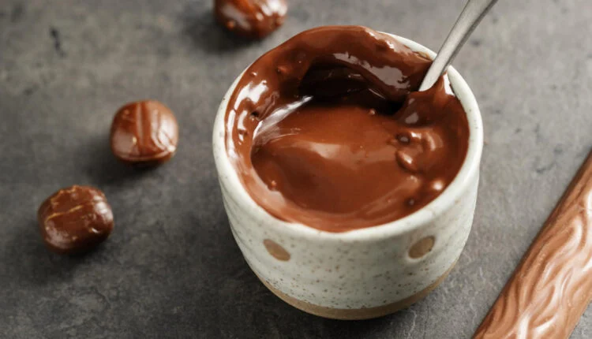
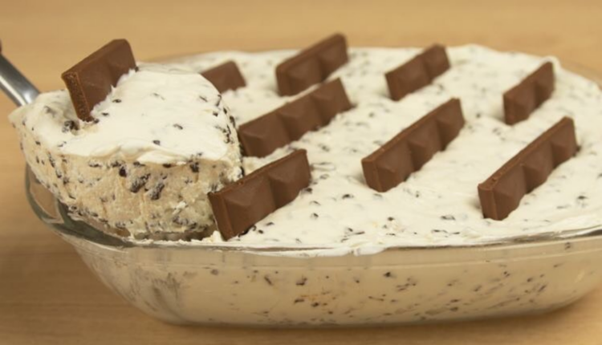
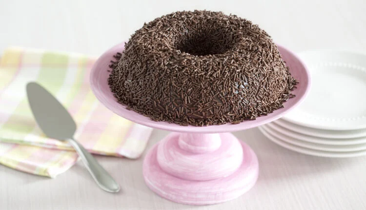

Rango da Hora
Aprenda uma maneira fácil de fazer batata rústica na Air Fryer
Veja essa receita simples e prática de batata rústica!
A batata rústica, também chamada de batata artesanal, é uma preparação culinária que funciona como uma alternativa às batatas fritas. Isso porque ela é feita no forno, temperada com azeite e ervas, sendo uma opção mais saudável de lanche ou acompanhamento.
Além disso, é bem mais simples preparar a batata rústica, visto que é mais rápida e deixa menos bagunça na cozinha. Por isso, hoje vamos te ensinar a como fazer batata rústica na Air Fryer.
-  Danete Caseiro: Aprenda a fazer essa deliciosa receita de liquidificador
-  Moça Gelada: aprenda como fazer essa delícia.
- Receita de brigadeirão de micro-ondas: Saiba como preparar essa delícia